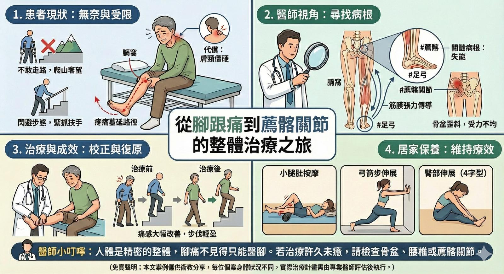

今天診療了一位被疼痛折磨兩年多的患者。坐下時神情無奈，主訴是腳跟頑固的 #足底筋…
今天診療了一位被疼痛折磨兩年多的患者。坐下時神情無奈，主訴是腳跟頑固的 #足底筋膜炎 。
🛑 痛到不敢走路，連爬山都成奢望
仔細詢問病史，發現這個問題並非「突然發生」。起初只是膝蓋後方（膕窩）痠痛，後來痛感一路向下蔓延至腳底，甚至伴隨麻木感。
為了閃避腳跟落地的刺痛，養成了僵硬的「閃避步態」，上樓梯必須緊抓扶手才能一拐一拐地把自己撐上去。這兩年來，連朋友揪團爬山、走步道，都只能黯然拒絕。更糟糕的是，因為長期重心偏移，身體為了維持平衡，連肩頸也開始出現長期的僵硬與痠痛。
🔍 醫師視角：開啟全人視野
在中醫整體觀中，疼痛的位置往往不是病灶的源頭。
透過脈診偵測與理學檢查，發現 #足弓 與 #薦髂關節 的失能才是關鍵病根：
1. 薦髂關節（SIJ）失能：骨盆是下肢的地基，地基歪斜導致腿部受力不均。
2. 筋膜張力傳導：膕窩的痠痛是前兆，代表後側筋膜線（淺背線）早已緊繃，最終壓力在足底爆發。
3. 對側代償：肩頸的痠痛，正是身體為了平衡患側無力而產生的代償結果。
💡 治療與成效
治療策略上，我並未過度刺激發炎的腳底，而是著重於 #足弓 的調整與 #薦髂關節 的治療。
一旦下肢力學連動模式被校正，從骨盆到足弓的彈性鏈就能重新支撐步伐的承重與回彈。治療後，立刻壓力測試，直接去走樓梯測試。
踏出幾步後，驚訝地回頭說：「痛感真的少了很多！走路變輕盈，上樓梯終於不用死抓扶手了。」困擾兩年的疼痛當場大幅改善。
🏠 居家簡易保養
治療後回家也要記得保養，針對張力來源做放鬆，才能維持療效：
1. 小腿肚按摩：用手或滾筒輕推按摩小腿後側肌肉（腓腸肌），從源頭釋放張力，減少對足底的拉扯。
2. 弓箭步伸展：雙手推牆做弓箭步，感覺後腳小腿深層被拉開，進一步延展淺背線。
3. 臀部伸展（4字型）：坐姿翹二郎腿（像數字4），身體慢慢前傾，伸展臀部與薦髂關節周邊肌肉。
👨⚕️ 醫師小叮嚀
人體是精密的整體，腳痛不見得只能醫腳。若您的疼痛治療許久未癒，或許該檢查看看，是不是骨盆、腰椎或是薦髂關節在作祟？
(免責聲明：本文案例僅供衛教分享，每位個案身體狀況不同，實際治療計畫需由專業醫師評估後執行。)
太初中醫診所 東門中醫
中醫師 黃彥鈞
